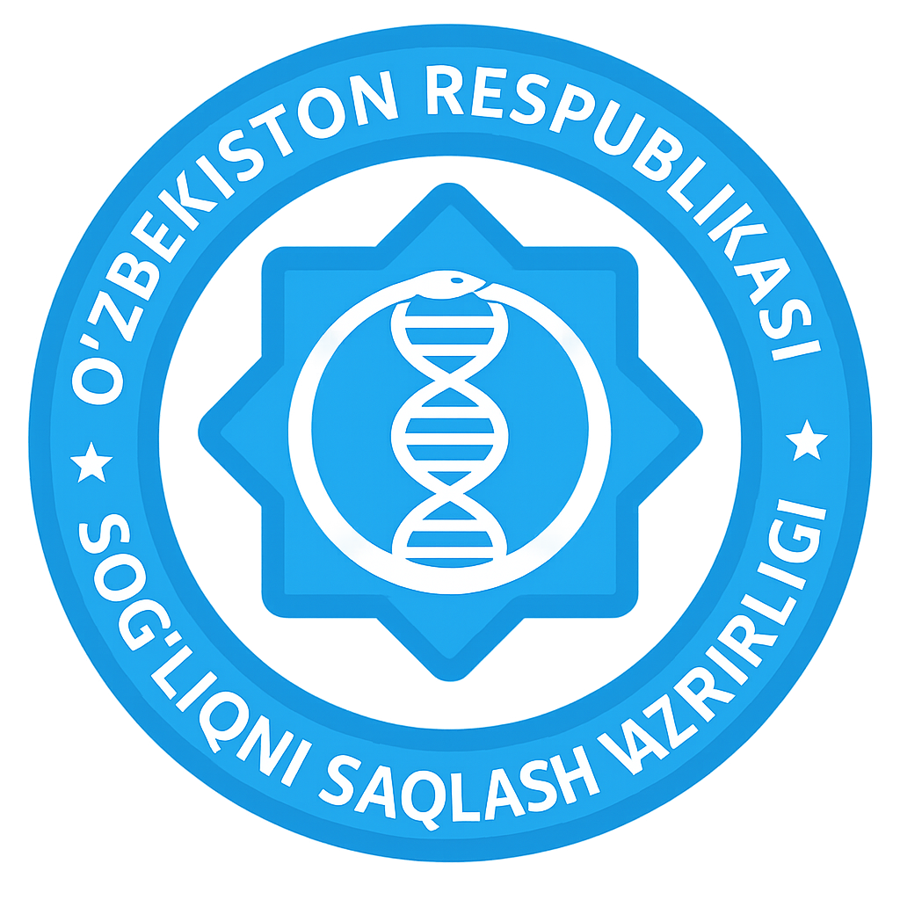

DMED Bo'yicha Qo'llanmalar
Bu sahifa
Suhrob003
tomonidan tayyorlangan.
UZ
RU
Barchasi
Kirish. Вход в систему.
DMEDga kirish
Вход в систему
Registratura. Регистратура.
Bemorni MyID orqali ro'yxatdan otkazish
Регистрация пациента по MyID
Voyaga yetmagan bemorni xujjatsiz ro'yxatga olish
Регистрация несовершеннолетнего пациента без документов
Bemorni F.I.SH. orqali ro'yxatdan o'tkazish
Регистрация пациента на прием по ФИО
Shifokor. Врач.
Bemorni muolajaga yuborish
Направление пациента на процедуру
Bemorni vaksinaga yuborish
Направление на вакцинацию
Shablonlar yaratish
Создание шаблонов
Epizod murojaatidan yo'llanma yararish
Госпитализация через эпизоды обращения
Bemorning kasallik tarihini davom ettirish
Продолжения эпизода обращения пациента
Bemorni qabulga taklif qilish va yangi epizod yaratish
Приглашение пациента на прием и создание нового эпизода
Bemorning tibbiy kartasi va uning bo'limlari bilan tanishish
Ознакомление с мадкартой пациента и его разделами
Bemorni boshqa mutaxassisga yuborish
Направление пациента к другому специалисту
Bemorni analizga yuborish
Назначение анализов
Bemorning ro'yxatlarini o'zgartirish
Изменения учетов пациента
Epizodni chop etish
Распечатка эпизода обращения
Bemorga retsept yozib berish
Выписка рецептов пациенту
Laboratoriya. ЛИС.
Tahlil qo'shish
Добавление исследования
Bemorning test natijalarini kiritish
Ввод результатов анализа
Biomaterial olish
Забор биоматериала
Direktor. Директор
Akkaunt yaratish
Создание аккаунта
Активация и деактивация аккаунта сотрудника
Добавление графика отсутствия сотрудника
Одобрение статуса госпитализации
Amaliyotchi hamshira. Практикующая медсестра.
Bemorning antropometriyasini kiritish
Внесение антропометрии пациента
Patronaj rejasini tuzish
Составление патронажного плана
Bemorni ro'yxatlarga olish
Внесение пациента в учеты
Bemorni hududga biriktirish
Прикрепления пациентов к участку
Kasalxonaga qabul qilish. Приемный покой.
Kasalxonaga yotqizishni yakunlash
Завершение лечения
Chiqarilgan epikrizni shakllantirish
Формирование выписного эпикриза
Bosqichli epikrizni yaratish
Создание этапного эпикриза
Davolanish rejasini qo`shish (Davolash kursi bo`limida)
Создание назначений (раздел курс лечения)
Davolash kursini qo`shish
Добавление курсов лечения
Analizga yuborish
Направление на анализы
Klinik tashxisni asoslash
Обоснование клинического диагноза
Ko`riklar kundaligini yaratish va tahrirlash
Создание/редактирование дневников осмотра
003 shakilni yaratish/tahrirlash va chop ettish
Создание/редактирование и распечатка формы 003
Bo`limda korik otkazish
Проведение осмотра в отделении
Boshlang`ich tekshiruvni o`tkazish
Проведение первичного осмотра
Yo`llanmasiz kasalxonaga qabul qilish
Оформление в приемный покой без направления
Kasalxonaga qabul qilish
Оформление пациента. Приемный покой.
Kasalxonaga yo'llanma. Госпитализация.
027 shaklini tahrirlash
Редактирование формы 027
Kasallxonaga yo`llanma holatini tasdiqlash
Одобрение статуса госпитализации
Kasalxonaga yo'llanma
Госпитализация
Kasalxonaga yo’llanma. Qabul qilinganda epikrizni qo'lda to'ldirish.
Госпитализация. Заполнение эпикриза при поступлении вручную.
Murojat epizodi orqali kasalxonaga yotqizish
Госпитализация через «Эпизод обращения»
Bosh sahifa